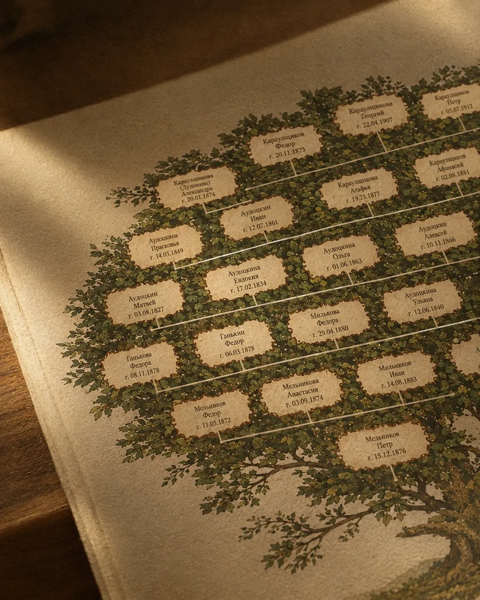
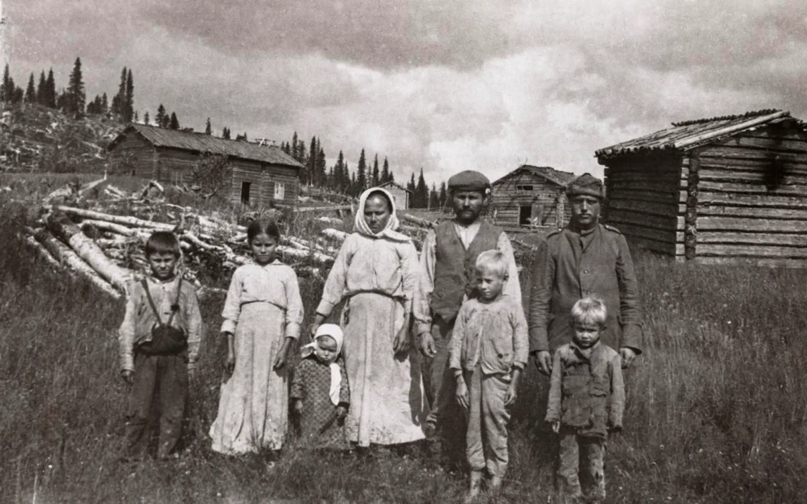

Точечные генеалогические исследования и дизайн древа
Точечное исследование — ответ на один конкретный вопрос о предке. Не вся история рода, а одна задача: найти нужную запись, подтвердить родство или проверить семейную легенду.
Вы получите копии найденных документов с расшифровкой. Срок и стоимость зависят от задачи — обсудим их на консультации.
Обсудить задачуС чем к нам приходят
- Для документов. Нужно доказать родство — для наследства, суда или гражданства по происхождению. Находим в архивах и ЗАГСах записи о рождении, браке и смерти, которые связывают вас с предком.
- Для себя. Хочется узнать, кем был прадед, где венчались бабушка с дедушкой или откуда родом фамилия. Ищем нужную запись и объясняем простыми словами, что в ней сказано.
- Проверить семейную легенду. В семье передают историю о предке, но доказательств нет? Сверяем рассказ с документами и честно показываем, что подтвердилось, а что нет.
- Если сведения о семье уже собраны, оформим их в дизайн родословного древа — об этом ниже.
Этапы работы
-
Разбираем задачу
Узнаём, что нужно найти или подтвердить и какие сведения уже есть. Обсуждаем срок и стоимость — они зависят от задачи.
-
Ищем в нужном архиве
Запрашиваем документы в архивах и ЗАГСах, расшифровываем записи и проверяем, что они относятся именно к вашему предку.
-
Передаём результат
Копии найденных документов с расшифровкой — или готовый дизайн родословного древа, если вы заказали оформление.
Можно добавить к исследованию

Дизайн родословного древа
- срок и цена — под задачу
Что это такое?
Найденное в архивах — или то, что семья уже знает, — оформим в родословное древо, как в родословной книге: для печати на холсте или бумаге либо в электронном виде.
- Схема родстваСобираем имена, даты и связи в одну схему — из найденных документов и семейных сведений.
- СогласованиеПоказываем схему вам, уточняем написание имён и дат, решаем, сколько поколений поместить.
- Дизайн и печатьГотовим макет для печати на холсте или бумаге либо файл в электронном виде.

Расскажите о своей задаче
Оставьте сообщение на сайте или напишите нам в мессенджер — ответим на вопросы и подскажем, с чего начать.